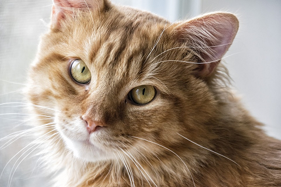
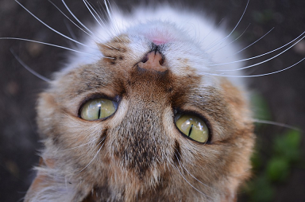
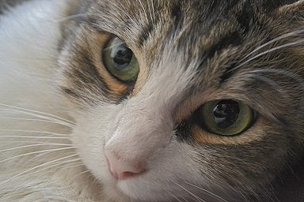

КОТ - ПОЛИГЛОТ
На каком языке говорит Кот, когда вы слышите его "Mяяяээу!"? В том-то и дело, что на всех! Разговаривайте чаще с Котом, может и Вам удастся выучить иностранный язык.
КОТ - НАОБОРОТ
Смотреть на вещи под любым углом и в любом положении тоже может Кот. При этом у него никогда не кружится голова и он крепко стоит на своих лапах. Ну, или лежит на спине.
КОТ - ЗВЕЗДОЧЕТ
Думаете Кот смотрит на звездное небо от безделья? Или от того, что спит весь день напролёт? Вовсе нет! Просто ему приятно чувствовать себя своим среди своих.
ДУМАТЕЛЬ - КОТ
Вы когда-нибудь видели Кота с глупым выражением его прекрасной мохнатой мордочки? И не увидите! Кот спокоен и мудр. Особенно, когда сыт и приласкан.
Есть чему поучиться у Кота?)))